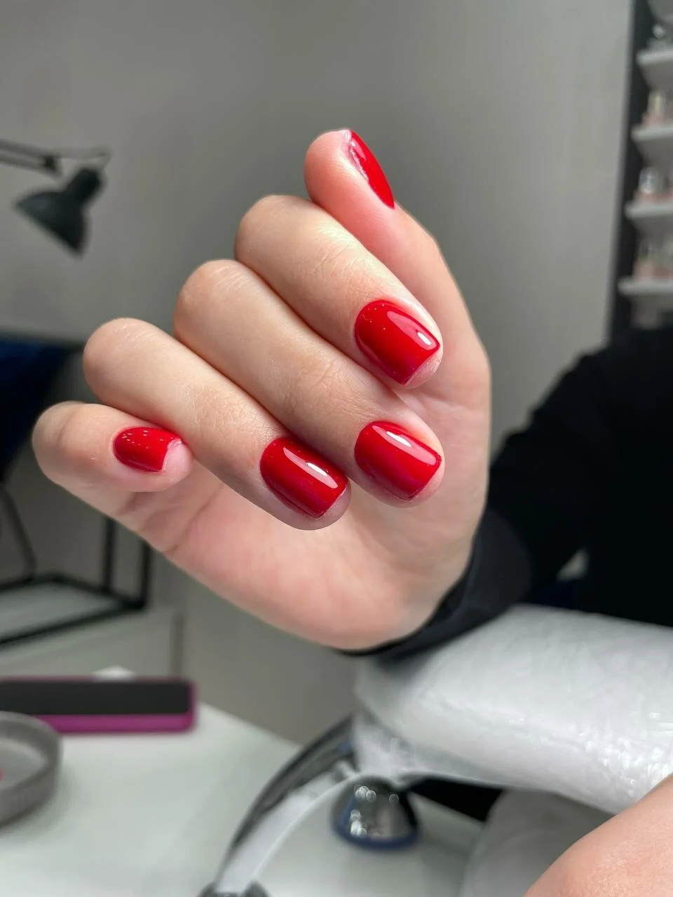
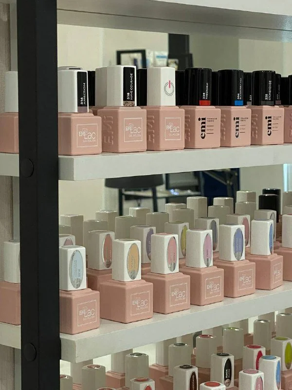

«Валерия - самый лучший мастер этого салона, сделала самые идеальные ногти вот просто придраться не к чему, а главное очень быстро!»
NAILS & BEAUTY / КРАСНОДАР
Маникюр,
который хочется
рассматривать.
От спокойного нюда до яркого акцента.
Маникюр и педикюр в Clips by Clips.
Откроется онлайн-запись студии на Яндекс.Картах.
5,0★★★★★107 отзывов на Яндекс.Картах ↗
THE LITTLE DETAILS / CLIPS BY CLIPSСначала вы.
Потом всё остальное.
ВЫБЕРИТЕ СВОЙ ОТТЕНОК НАСТРОЕНИЯПотом всё остальное.
01 / ПОЗАБОТИТЬСЯ О СЕБЕ
Время для
красивых деталей.
Выберите услугу.
Мастера и свободное время — в онлайн-записи.
01
Маникюр + гель-лак
2 190 ₽↗02Маникюр + LUXIO
2 390 ₽↗03Маникюр без покрытия
1 200 ₽↗04Японский маникюр
1 600 ₽↗05Мужской маникюр
1 500 ₽↗01
Педикюр + гель-лак
2 790 ₽↗02Педикюр + LUXIO
2 990 ₽↗03Педикюр без покрытия
1 900 ₽↗04Мужской педикюр
2 600 ₽↗05Обработка пальчиков
1 300 ₽↗01
Наращивание ногтей
от 3 600 ₽↗02Коррекция гелем
3 090–3 290 ₽↗03Пилочный маникюр
1 500 ₽↗04Детский маникюр
800 ₽↗05Маникюр + лак
1 600 ₽↗Цены сверены с формой онлайн-записи 16.11.2026. Обычная витрина карточки помечена как давно не обновлявшаяся. Итоговую стоимость, состав услуги и наличие времени уточните при записи.
02 / РАБОТЫ ИЗ КАРТОЧКИ СТУДИИ
Нюд? Ярко?
По-вашему.
Сохраните то, что понравилось,
и покажите мастеру перед записью.
Листайте и выбирайте своё настроение
Фотографии из галереи Clips by Clips на Яндекс.Картах, 2022–2023 годы. Авторы: Smart Service и Мария Сикальчук. Актуальные работы и возможность повторить дизайн уточните в студии.

Каждый оттенок — новое настроение.03 / ВАШ МАЛЕНЬКИЙ РИТУАЛ
Не просто цвет.
Ваш цвет.
Спокойный нюд для каждого дня, насыщенный красный или дизайн с деталями. Выберите направление по фотографиям, а оттенок и форму обсудите с мастером.
01
Покрытия и дизайн
LUXIO, гель-лак и лак — в прайсе студии.
02
Услуга, мастер, время
Выбирайте в действующей онлайн-записи.
03
Краснодар, 40-летия Победы
Дом 135. Маршрут — по ссылке на карту.
04 / ЧТО ГОВОРЯТ ГОСТИ
Красиво — когда
вам нравится.
«Мастера и администратор добродушные чуткие, спокойные(это мне передается в виде комфорта);»
Приведены фрагменты отзывов. Полный текст, включая замечания гостей, доступен в карточке по ссылке выше. Год для этих дат площадка не показывает.
05 / УВИДИМСЯ В CLIPS
Осталось выбрать
свой день.
Выберите услугу и удобное время.
Пусть у заботы о себе будет место в планах.